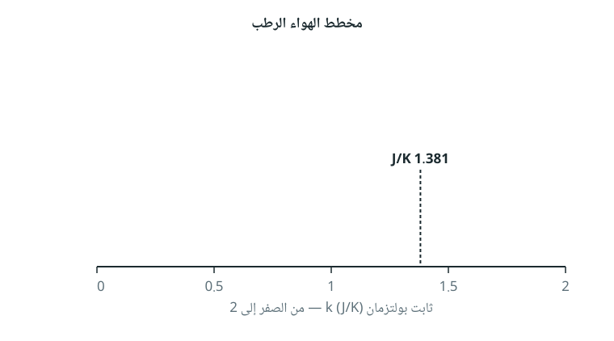

مخطط الهواء الرطب
Psychrometric chart
مخطط الهواء الرطب رسم بياني يربط خواص الهواء الرطب: درجة الحرارة الجافة والرطبة، والرطوبة المطلقة، والرطوبة النسبية، والإنثالبي. يُستعمل في تصميم التكييف والتجفيف.
مخطط الهواء الرطب هو تمثيل بياني لخواص خليط الهواء وبخار الماء عند ضغط جوي ثابت. ويُبنى على محورين: درجة الحرارة الجافة أفقياً، والرطوبة المطلقة (نسبة الرطوبة) رأسياً. وعليه خطوط الرطوبة النسبية الثابتة، وخطوط الإنثالبي الثابتة، وخطوط الحجم النوعي، وخط التشبع الذي تلتقي عنده كل خطوط الرطوبة النسبية عند 100%. ويُستعمل المخطط في تصميم التكييف والتجفيف والتبريد التبخيري، لأنه يسمح بقراءة أثر أي عملية على خواص الهواء بلا حساب تفصيلي. والعمليات تُرسم عليه كخطوط: التسخين الحسّي خط أفقي، والتبريد الحسّي خط أفقي نازل حتى التشبع، والترطيب بالبخار خط شبه عمودي، والتبريد التبخيري خط على إنثالبي ثابت. مثال: هواء عند 30 °م ورطوبة نسبية 40% رطوبته المطلقة نحو 10.6 غ/كغ، وإنثالبيه نحو 57 كيلوجول/كغ.
كيف تعمل الظاهرة؟
الهواء الرطب خليط من هواء جاف وبخار ماء، ويُعامَل عادة كغاز مثالي في مجال التكييف. وقدرة الهواء على حمل البخار محدودة بضغط البخار المشبع عند درجته، وهو يزيد بزيادة درجة الحرارة. فحين يُبرَّد الهواء عند رطوبة مطلقة ثابتة، تقترب رطوبته النسبية من 100% عند درجة الندى، ثم يبدأ البخار الزائد بالتكاثف. وحين يُسخَّن، تنخفض رطوبته النسبية لأن ضغط التشبع يزيد. ولهذا فالتسخين لا يزيل الماء من الهواء، بل يزيد قدرته على حمله. والتبريد التبخيري يستفيد من حرارة التبخير الكامنة: يتبخر الماء فيسحب حرارة من الهواء فتنخفض درجته مع ارتفاع رطوبته.
العلاقة بالأرقام
الرطوبة المطلقة ω = 0.622·p_v/(p − p_v) بوحدة kg/kg هواء جاف. والرطوبة النسبية φ = p_v/p_sat(T). والإنثالبي h = 1.006·T + ω·(2501 + 1.86·T) بوحدة kJ/kg هواء جاف. ودرجة الندى هي درجة الحرارة التي عندها p_sat = p_v. مثال: عند 30 °م وφ = 40%، p_sat ≈ 4.246 kPa، فp_v = 1.698 kPa، وω = 0.622×1.698/(101.325−1.698) = 0.0106 kg/kg = 10.6 g/kg. وh = 1.006×30 + 0.0106×(2501+1.86×30) = 30.2 + 27.1 = 57.3 kJ/kg.
مفاهيم متقاربة
الرطوبة المطلقة كتلة بخار في كتلة هواء جاف، والنسبية نسبة إلى الحد الأقصى عند الدرجة نفسها؛ الأولى لا تتغير بالتسخين والثانية تتغير. ودرجة الحرارة الجافة تقيسها حساس عادي، والرطبة تقيسها حساس مبلل وتتأثر بالتبخير. والمخطط ليس منحنى امتزاز ولا مخطط طور لمادة نقية. والمخطط مبني لضغط محدد، فلا يُستعمل عند ضغوط أخرى بلا تصحيح. والإنثالبي على المخطط لكل كيلوغرام هواء جاف، لا لكل كيلوغرام خليط.
حدود التطبيق
المخطط مبني لضغط جوي قياسي، ولا يصحّ استعماله عند ضغوط مرتفعة أو منخفضة بلا تصحيح. وفي درجات عالية جداً لا يبقى الهواء الرطب غازاً مثالياً. وفي الأنظمة التي تحتوي ملوثات أو أبخرة أخرى لا يبقى المخطط ثنائي المكوّن صالحاً. ولا تُقرأ القيم من المخطط بدقة أعلى من دقته الرسومية، فالحساب الرقمي أدق. والرطوبة النسبية المقيسة تعتمد على درجة الحرارة، فقياسها في موضع غير ممثِّل مضلل.

| الكمية | القيمة | المصدر |
|---|---|---|
| ضغط البخار المشبع للماء عند 100 °م | 0.101 42 MPa | [2] |
المصادر
- 1 The International System of Units (SI), 9th edition (2019) — BIPM — Bureau International des Poids et Mesures (2019). www.bipm.org/en/publications/si-brochure · اطُّلع عليه 2026-11-21
- 2 NISTIR 5078: Thermodynamic Properties of Water — Tabulation from the IAPWS Formulation 1995 — NIST — National Institute of Standards and Technology (1998). nvlpubs.nist.gov/nistpubs/Legacy/IR/nistir5078.pdf · اطُّلع عليه 2026-11-21
- 3 CODATA Value: molar gas constant — NIST — CODATA 2022 recommended values (2024). physics.nist.gov/cgi-bin/cuu/Value?r · اطُّلع عليه 2026-11-21
استشهد بهذا المصطلح
الصيغتان مبنيتان من بيانات الصفحة نفسها: العنوان والتاريخ ورابط النسخة المنشورة.
مخطط الهواء الرطب — Psychrometric chart. (2026). ديوان المعرفة — انفراد. https://infiradev.com/diwan/terms/term-psychrometric-chart.html
@misc{term-psychrometric-chart2026,
title = {مخطط الهواء الرطب},
titleaddon = {Psychrometric chart},
howpublished = {{ديوان المعرفة — انفراد} — مرجع علمي عربي},
year = {2026},
url = {https://infiradev.com/diwan/terms/term-psychrometric-chart.html},
urldate = {2026-11-26},
note = {مراجعة علمية: hermes (مراجعة معتمدة 2026-11-26)}
}
راجعه: hermes (مراجعة معتمدة 2026-11-26) · 2026-11-26 · آخر تحديث 2026-11-21